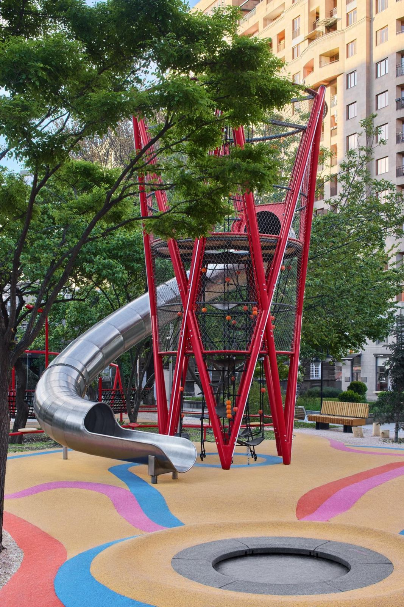
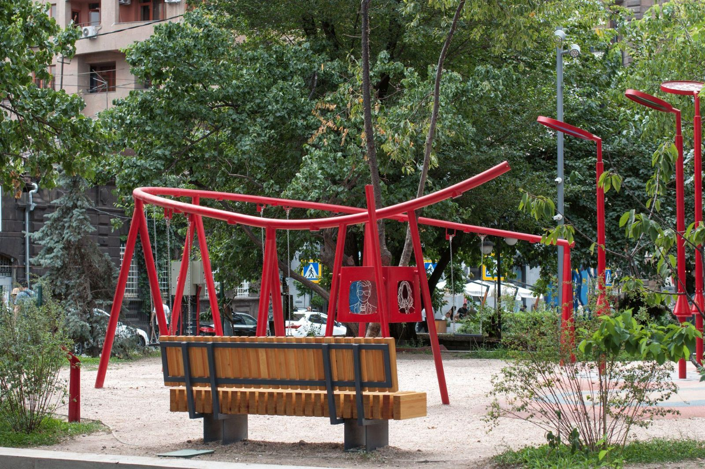
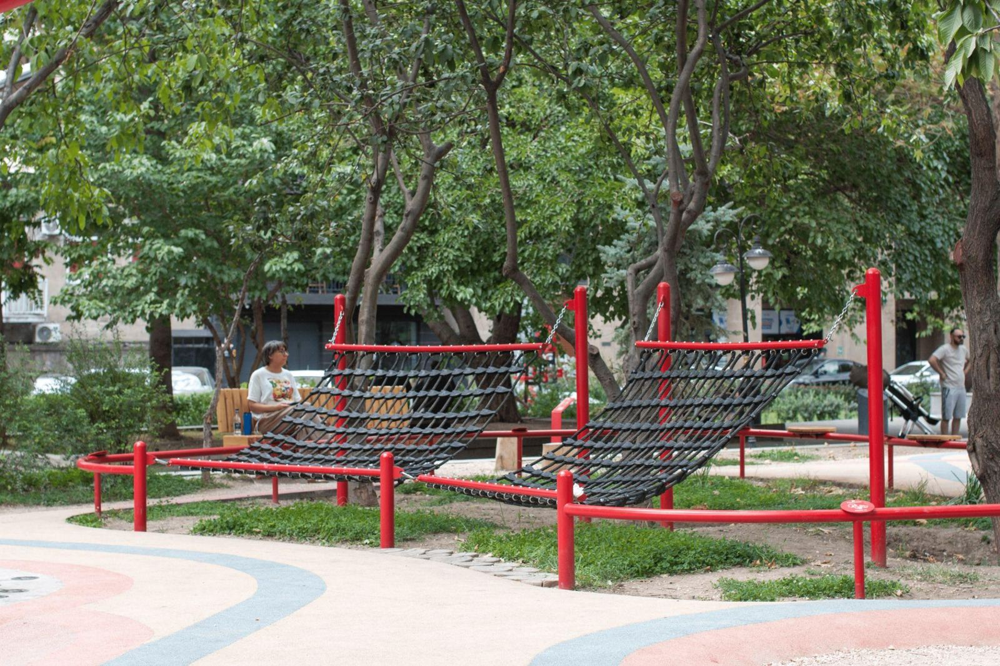

Армянские изобретатели
- Задача
- Игровое пространство на небольшом участке с деревьями в оживлённом парке в центре города.
- Решение
- Площадка растёт вверх, в виде игровой башни. Тема роста связана с наукой: площадка посвящена армянским учёным Армении и диаспоры.
- Моя роль
- Эскизы башни и задание на производство, авторское оборудование (качели с подсветкой, «Телевизор», теневой интерактив, гамак), МАФ, документация, авторский надзор.
- Результат
- Реализовано в 2026 году.